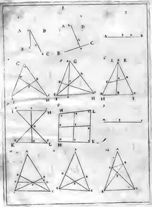

Appendix Geometrica: Lunes, Solids, Centroids, Indivisibles & Plates¶
The Appendix Geometrica (printed pp. 61–83, folios 0078–0100, followed by the Imprimatur & Monza Colophon 0101–0102 and all ten folding copperplates 0103–0126) collects 16 standalone theorems born from Ceva’s youthful circle-quadrature investigations alongside a celebrated closing critique of Cavalieri's indivisibles:
Hippocrates’s Lunes & Circle Quadratures (`Props. I–VI`, pp. 61–67): Right-triangle inequalities, Hippocrates’s single and double lunes, and semihexagon quadrature.
Cylindrical Hooves & Hyperbolic Solids (`Props. VII–XII`, pp. 67–77): The cylindrical ungula (\(2/3\) of its circumscribed triangular prism), oblique hooves, hyperbolic annulus (\(2/3\) of asymptotic cylinder), and hyperbolic conoids.
Centers of Gravity & Infinite Solids (`Props. XIII–XVI`, pp. 77–81): Hemisphere centroid (\(5:3\), citing Luca Valerio), paraboloid centroid (\(2:1\), citing Torricelli), finite volume of an infinitely extended hyperbolic solid (Torricelli’s Trumpet analog), and centroid of an infinite hyperbolic plane.
Indivisibles Paradox, Errata, Colophon & Plates (`pp. 81–83`, folios ``0098``–``0126``): Ceva’s sphere-surface counterexample exposing the limits of naive indivisibles, the 20-line Errata table with Monza’s authentic Printer’s Note on ``✠``, Ludovico Monza’s colophon, and the complete gallery of all 10 folding copperplates (Tabulae I–X).
Proposition I: Squared Sides and Opposite Angles of a Right Triangle
Appendix Geometrica · Proposition I · Theorem I (Tab. 8, Fig. 68)
Proposition II: Rectilinear Quadrature of Circular Lunes
Proposition II · Theorem II (Tab. 8, Figs. 69–70)
Proposition III: Twelfth-Semicircle Arcs from Squared Side Ratios
Proposition III · Theorem III (Tab. 8, Figs. 69–70)
Appendix Geometrica · Menisci, Solida, Centra Grauitatis & Tabulae
Appendix Geometrica editionis Mediolanensis anni MDCLXXVIII (pp. 61–83; folia 0078–0100), vnà cum Imprimatur, Colophone Ludouici Montiae (0101–0102), & decem Tabulis aeneis (0103–0126).
Appendix Geometrica — Scholarly & Symbolic Notes
Archival Provenance: Printed pp. 61–83 (folios 0078–0100), Imprimatur & Monza Colophon (0101–0102), and ten folding copperplate plates (Tabulae I–X, 0103–0122) with trailing endpapers (0123–0126).
Appendix Geometrica — Summary
The Appendix Geometrica and backmatter (folios 0078–0126) comprise 19 atomic leaves:
Proposition IV: Hippocrates’ Lune on an Isosceles Right Triangle
Proposition IV · Theorem IV (Tab. 8, Fig. 71)
Proposition V: Generalized Double Lune of Hippocrates
Proposition V · Theorem V (p. 66, Tab. 8, Fig. 72)
Proposition VI: Semihexagon Quadrature with Lune and Circular Segment
Proposition VI · Theorem VI (pp. 66–67, Tab. 8, Fig. 73)
Proposition VII: Cylindrical Hoof as Two-Thirds of Circumscribed Prism
Proposition VII · Theorem VII (pp. 67–69, Tab. 9, Fig. 74)
Proposition VIII: Ratio of Oblique Cylindrical Hooves
Proposition VIII · Theorem VIII (pp. 70–71, Tab. 9, Fig. 75)
Proposition IX: General Oblique Cylindrical Portions via Prisms and Pyramid
Proposition IX · Theorem IX (pp. 71–73, Tab. 9, Fig. 76)
Proposition X: Hyperbolic Annulus as Two-Thirds of Asymptotic Cylinder
Proposition X · Theorem X
Proposition XI: Volume of a Hyperbolic Conoid
Proposition XI · Theorem XI (pp. 75–76, Tab. 10, Fig. 78)
Proposition XII: Hyperbolic Conoid Inscribed in a Conical Frustum
Proposition XII · Theorem XII (pp. 76–77, Tab. 10, Fig. 79)
Proposition XIII: Center of Gravity of a Hemisphere (5:3)
Proposition XIII · Theorem XIII (pp. 77–78, Tab. 10, Fig. 80)
Proposition XIV: Center of Gravity of a Parabolic Conoid (2:1)
Proposition XIV · Theorem XIV (pp. 78–79, Tab. 10, Fig. 81)
Proposition XV: Finite Volume of an Infinite Hyperbolic Solid
Proposition XV · Theorem XV
Proposition XVI: Center of Gravity of an Infinite Hyperbolic Plane
Proposition XVI · Theorem XVI
Imprimatur and Ludovico Monza Colophon
I M P R I M A T U R.

Ten Folding Copperplate Plates (Tabulae I–X, Figs. 1–85)
Ten Folding Copperplate Plates (Tab. I–X, Figs. 1–85)